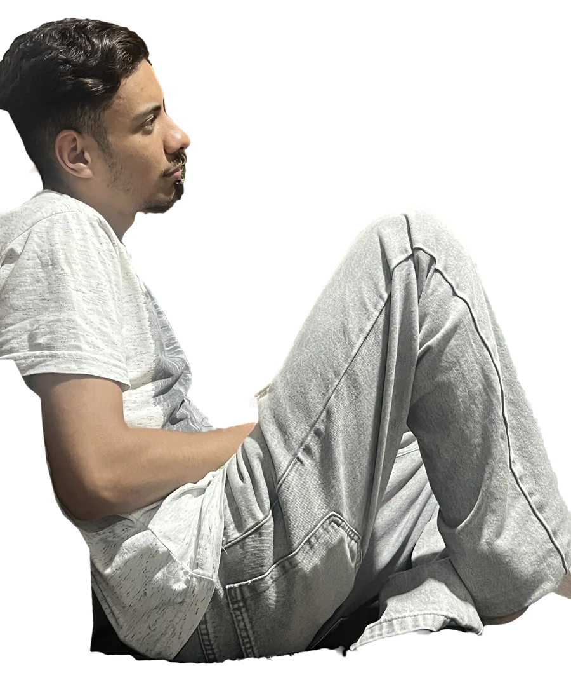
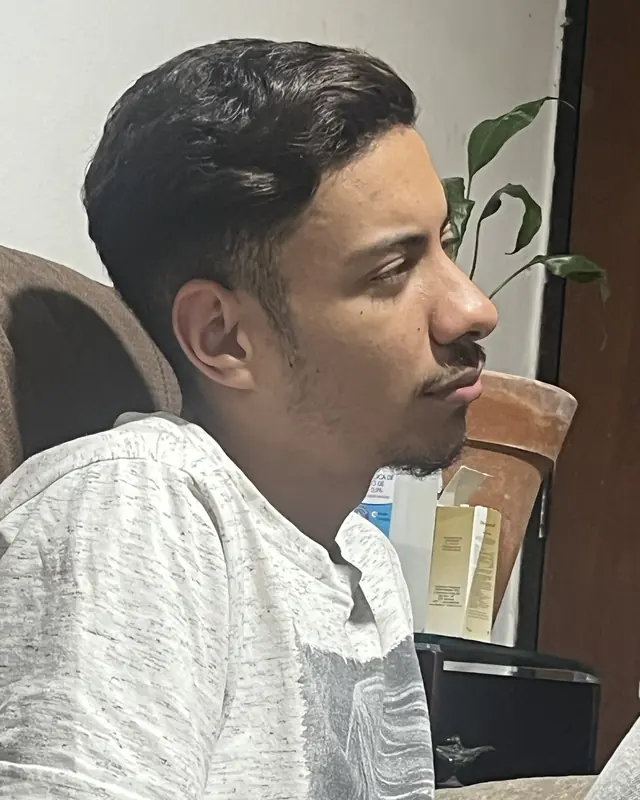
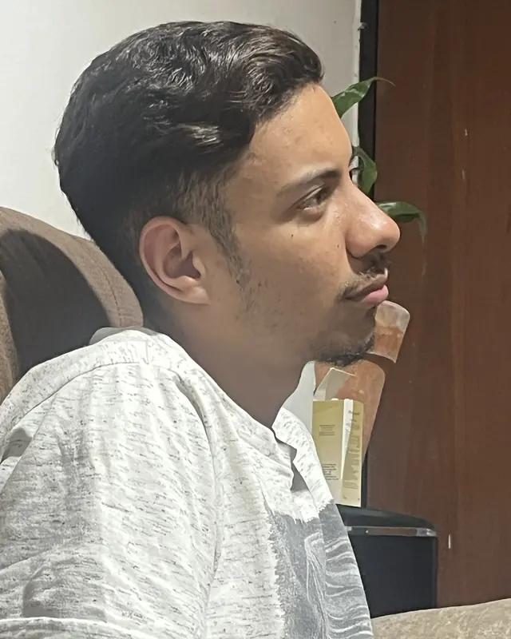
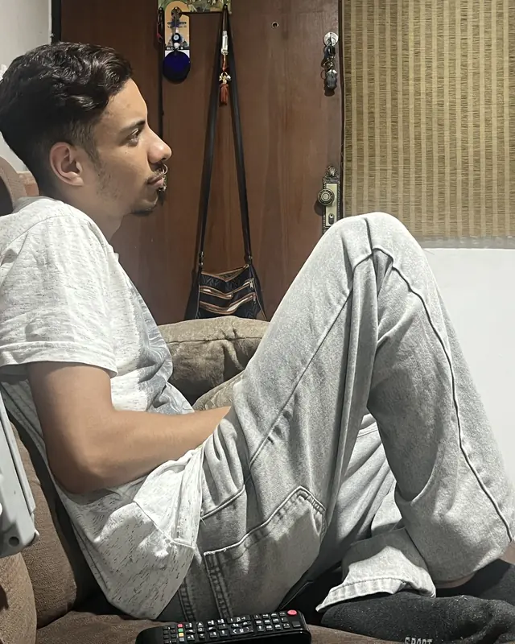
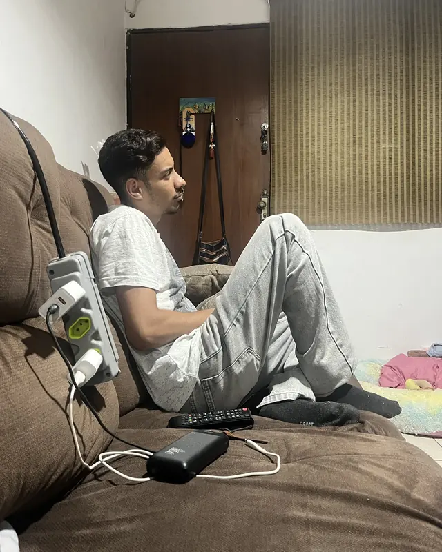
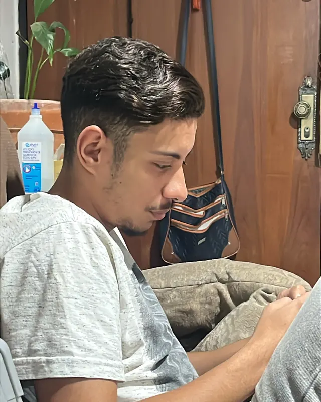
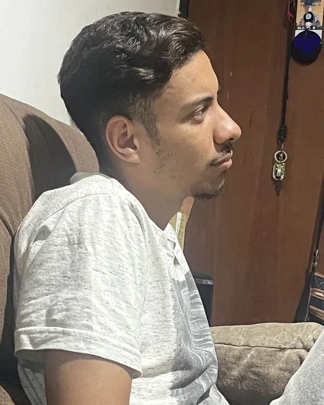
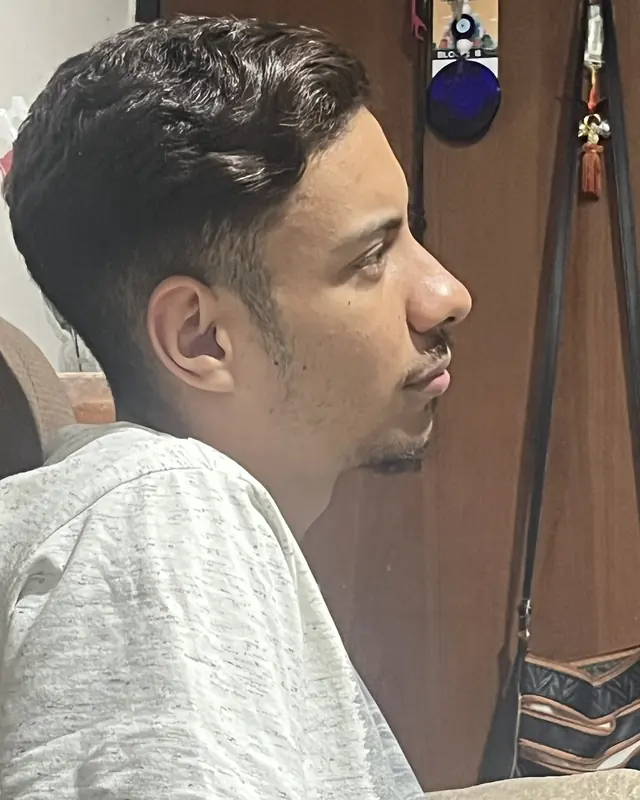

Quem vê onça só no zoológico…
…o dia que ele vê uma onça no meio da mata…
Mas coragem tem, depois que aconteceu, né?
É ruim a gente falar isso, deixa assim uma má impressão, né?
Esturrar! Na hora que o raio do pipoco come no pé do ouvido…
É perigoso. Nego treme nas base.
Mata onça mesmo?
Mata.
Aqui tem coragem. É a verdade, não minto.

- Quantas onças?
- Uai! Atirei a primeira na verdade, mas valeu por duas ou mais.
- Coragem
- Mas coragem tem, depois que aconteceu, né?
- Ibama
- É tanto que até não devemos falar isso não, devido a algum guarda do meio ambiente, as autoridades do Ibama.
- Berrante
- Com fé no Pai Eterno, sempre aqui estou, vou estar, estou aí firme para o meu berrante tocar.
- Zoológico
- Quem vê onça só no zoológico…
É perigoso
- Zoológico
- Meio da mata
- Esturrar
- Pipoco
- Nas calça
…que ela dá um…
Daquele jeito.
Nego treme
nas base.
Se tiver
na hora,
é perigoso
até nas
calça cagar.
Quem vê onça só no zoológico
Atirei a primeira na verdade, mas valeu por duas ou mais.







É a verdade, não minto.
Serjão Berranteiro, em entrevista à TV Goiânia.
-
Sou Serjão Berranteiro, mais conhecido como matador de onça, né? É a verdade, não minto.
0:00
-
E com fé no Pai Eterno, sempre aqui estou, vou estar, estou aí firme para o meu berrante tocar.
0:04
-
Mata onça mesmo?
Mata. Aqui tem coragem.
0:10
-
É tanto que até não devemos falar isso não, devido a algum guarda do meio ambiente, as autoridades do Ibama.
0:13
-
É ruim a gente falar isso, deixa assim uma má impressão, né? Mas coragem tem, depois que aconteceu, né?
0:19
-
Quantas onças você já matou?
Uai! Atirei a primeira, na verdade, mas valeu por duas ou mais.
0:24
-
Quem vê onça só no zoológico, o dia que ele vê uma onça no meio da mata esturrar… na hora que o raio do pipoco come no pé do ouvido, que ela dá um…
0:29
-
Daquele jeito. É perigoso, nego treme nas base. Se tiver na hora, é perigoso até nas calça cagar.
0:42